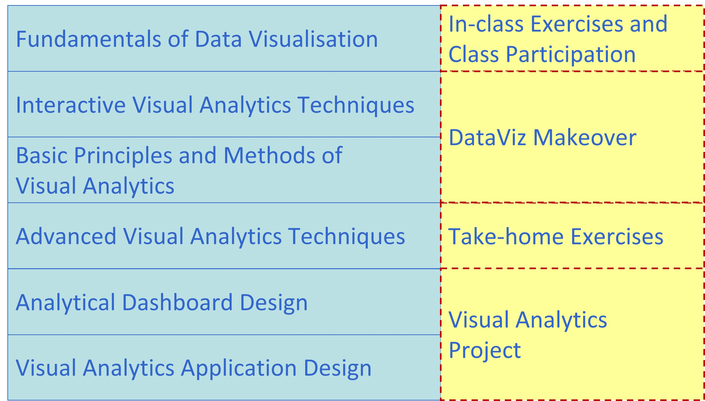
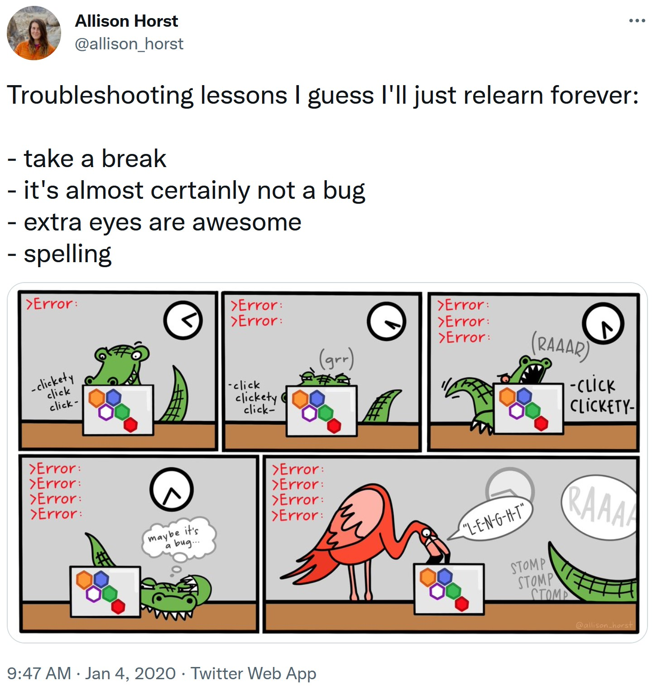
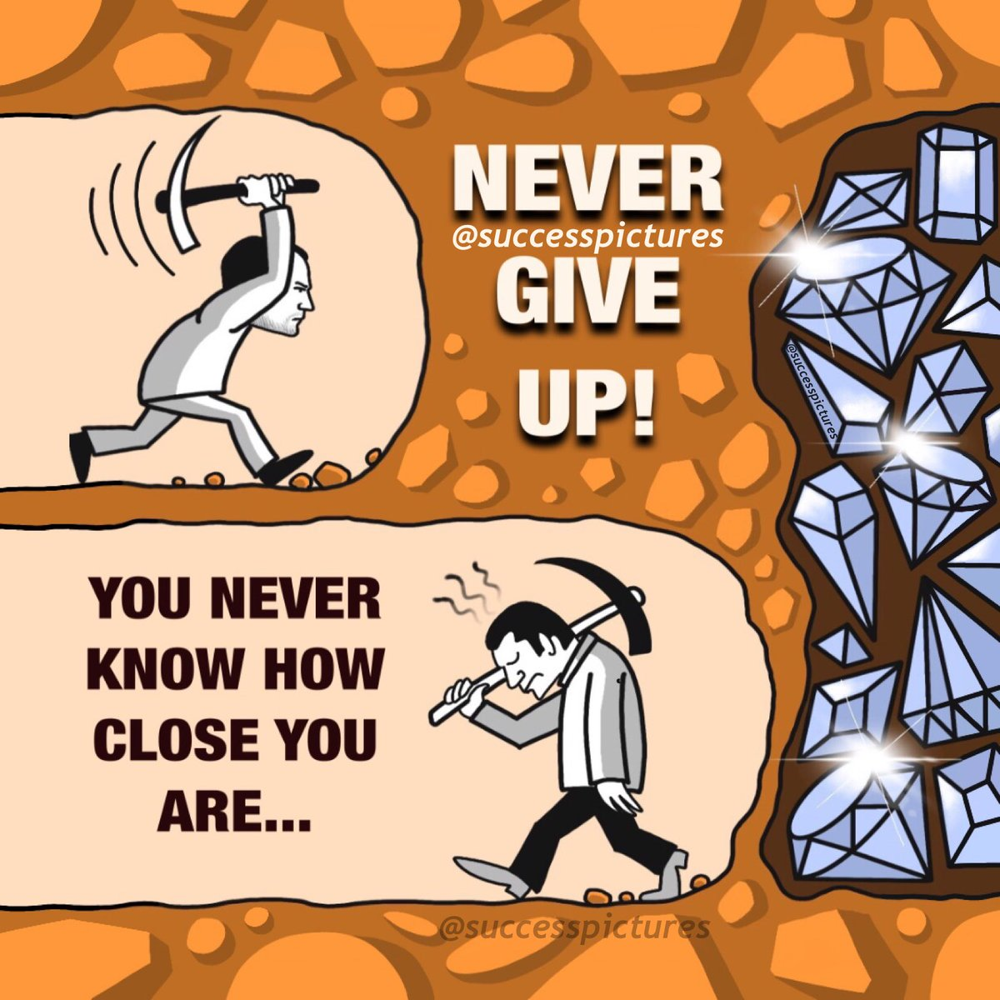

Syllabus
Synopsis
In this competitive global environment, the ability to explore visual representation of business data interactively and to detect meaningful patterns, trends and exceptions from these data are increasingly becoming an important skill for data analysts and business practitioners. Drawing from research and practice on Data Visualisation, Human-Computer Interaction, Data Analytics, Data Mining and Usability Engineering, this course aims to share with you how visual analytics techniques can be used to interact with data from various sources and formats, explore relationship, ’‘’detect the expected and discover the unexpected’’’ without having to deal with complex statistical formulas and programming.
The goals of this course are:
- To share with you the principles, best practices and methods of visual analytics
- To provide you hands-on experiences in using commercial-off-the-shelf visual analytics software and programming tools to design visual analytics applications
Learning Objectives
Upon successful completion of the course, students will be able to:
- Understand the basic concepts, theories and methodologies of visual analytics.
- Analyse data using appropriate visual thinking and visual analytics techniques.
- Present data using appropriate visual communication and graphical methods.
- Design and implement cutting-edge visual analytics system for supporting decision making.
Competencies
- Explaining the concepts and principles of Visual Analytics.
- Describing the differences between Visual Analytics, Data Visualisation, Statistical Graphs and Infographics.
- Explaining the basic concept of visual variables and applying these concepts and best practices in designing data-driven static graphs.
- Explaining interactive techniques and best practices, and applying these techniques in designing interactive data visualisation.
- Understanding the data characteristics of numerical data and building data visualisation by using appropriate visually driven univariate and bivariate data analytics methods.
- Understanding the characteristics of multivariate data and building data visualisation by using appropriate multivariate visualisation methods.
- Understanding the characteristics of time-series data and building data visualisation by using appropriate time-series visualisation methods.
- Understanding the characteristics of geographical data and building data visualisation by using appropriate geovisualisation methods.
- Understanding the characteristics of network data and building data visualisation by using appropriate network graph visualisation methods.
- Explain the concepts and principles of Information Dashboard.
- Building analytical dashboard by using Commercial off-the-shelf (COTS) software.
- Designing visual analytics application programmatically by using free and open source software and packages.
Basic Modules
This course comprises ten integrated components as shown below:

Prerequisites
There are no prerequisites for the class. However, students taking this course must be willing to learn R programming framework. For students who are new to R, you are encouraged to consult the following resources prior to the lesson starts:
- Garrett Grolemund & Hadley Wickham (2020) R for Data Science. This book is highly recommended to anybody who are interested to understand how to do ’‘’Modern Data Science’’’ by using ’‘’tidyverse’’’ principles and methods.
- 王敏杰 数据科学中的 R 语言.
You don’t have to finish reading either one of them before lesson starts. Take your time, review them from time to time. You will find yourself learning something new each time you revisit the book.
Course Assessment
The assessment for this course consists of four major components, namely:
- In-class Hands-on exercise and class participation,
- DataViz Makeover
- Take-home exercises,
- Visual Analytics Project.
There will be no mid-term test or final examination for this course.
In-class Exercise and Class Participation
A strict requirement for each class meeting is to complete the assigned readings and to try out the hands-on exercises before coming to class. Readings will be provided from the textbook on technical information and from provided documents and articles on business applications of Visual Analytics. Students are required to review the recommended readings and class exercises before coming to class. Without preparation, the learning and discussions would not be as meaningful. Student sharing of insights from readings and hands-on exercises of assigned materials in class participation will form a large part of the learning in this course.
During lesson, students are required to complete a series of hands-on exercises using either Tableau or R. In general, these exercises are guided if Tableau is used. For R programming session, hands-on guides will be shared on RPubs before lesson starts. By the end of each lesson, students are required to upload their in-class exercise onto eLearn for reviewing. The exercises will be briefly reviewed after collection. Students will be given 10 points for correctly completing the exercise, 7-9 points for partially completed and correct work, and 0 points if absent. Up to 100 points can be accumulated during the term.
Take-home Exercise
The take-home exercise provides students with the opportunity to revise and practice the R packages and programming skills they had learned in class at home. It is a weekly exercise. Each exercise is designed to be completed within 1.5-2 hours. The exercise is not a repetition of the in-class exercise but it requires students to be innovative and creative in applying appropriate R packages to design enlightening and yet functional data visualisation for analytics purposes.
Students may work together to help one another with R programming issues and discuss the materials that constitute the take-home exercise. However, each student is required to prepare and submit the take-home exercise (including any computer work) on their own. Cheating is strictly prohibited. Cheating includes but not limited to: plagiarism and submission of work that is not the student’s
Visual Analytics Project
The purpose of the project is to provide students with first hand experiences on collecting, processing and analysing large business data using real world data. A project may involve developing new methods or implementing visual analytics system to support analytic tasks in specific domains. Alternatively, a project may be in the form of application development by integrating analytical tools within a visual analytics environment. Students are encouraged to focus on research topics that are relevant to their field of study. It should address a concrete visual analytics problem and should propose a novel and creative solution.
For more details please refer to Visual Analytics Project page.
Grading Summary
The grading distribution of this course is as follows:
- In-class Exercise and Class Participation 20%
- Take-home Exercise 50%
- Visual Analytics Project 30%
- Project blog 15%
- Poster 10%
- Practice research paper 25%
- Artifact 50%
There will be no mid-term test and final examination for this course.
Words of Encouragement
For the next 10 weeks, your learning journey will be very bumpy, especially come to R programming

Learning R can be difficult at first—it’s like learning a new language, just like Spanish, French, or Chinese. Hadley Wickham—the chief data scientist at RStudio and the author of some amazing R packages you’ll be using like ggplot2 — made this wise observation:
It’s easy when you start out programming to get really frustrated and think, “Oh it’s me, I’m really stupid,” or, “I’m not made out to program.” But, that is absolutely not the case. Everyone gets frustrated. I still get frustrated occasionally when writing R code. It’s just a natural part of programming. So, it happens to everyone and gets less and less over time. Don’t blame yourself. Just take a break, do something fun, and then come back and try again later.
Even experienced programmers find themselves bashing their heads against seemingly intractable errors.

If you’re finding yourself taking way too long hitting your head against a wall and not understanding, take a break, talk to classmates, and don’t hesitate to approach me.
The students who have a bad time in this course are the ones who don’t work with one another to learn. We are a learning community, and we should help each other to learn.
If you understand something and someone is struggling with it, try and help them. If you are struggling, take a breath, and try to pinpoint what you are struggling with.
Our goal is to be better programmers each day, not to be the perfect programmer. There’s no such thing as a perfect programmer. I’ve been learning new things almost every day.
I promise you can succeed in this class as long as you are willing to learn, practice, be open minded and don’t give up easily.

Core Readings
Claus. O. Wilke (2019) Fundamentals of Data Visualisation, O’Reilly. USA
Cairo, Alberto (2013) The Functional Art: An Introduction to Information Graphics and Visualization, New Riders, Berkeley, CA. This book is available at SMU eLibrary.
Few, Stephen (2004) Show Me the Numbers: Designing Tables and Graphs to Enlighten, Analytics Press, Oakland, USA.
Few, Stephen (2009) Now You See It: Simple Visualization Techniques for Quantitative Analysis, Analytics Press, Oakland, USA.
Other Important Information
Academic Integrity
All acts of academic dishonesty (including, but not limited to, plagiarism, cheating, fabrication, facilitation of acts of academic dishonesty by others, unauthorized possession of exam questions, or tampering with the academic work of other students) are serious offences. All work (whether oral or written) submitted for purposes of assessment must be the student’s own work. Penalties for violation of the policy range from zero marks for the component assessment to expulsion, depending on the nature of the offense. When in doubt, students should consult the instructors of the course. Details on the SMU Code of Academic Integrity may be accessed at http://www.smuscd.org/resources.html
Accessibility and Accommodations
SMU strives to make learning experiences accessible for all. If you anticipate or experience physical or academic barriers due to disability, please let the instructor know immediately. You are also welcome to contact the university’s disability support team if you have questions or concerns about academic accommodations: included@smu.edu.sg Please be aware that the accessible tables in our seminar room should remain available for students who require them.
Emergency Preparedness for Teaching and Learning (EPTL)
As part of emergency preparedness, Instructors may conduct lessons online via the WebEx platform during the term, to prepare students for online learning. During an actual emergency, students will be notified to access the WebEx platform for their online lessons. The class schedule will mirror the current face-to-face class timetable unless otherwise stated.